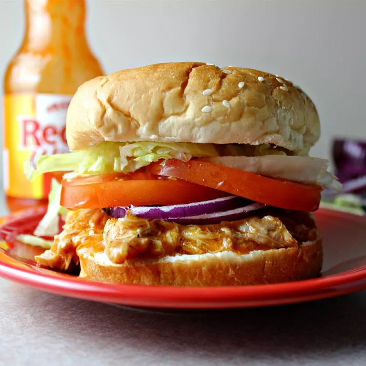

Slow Cooked Buffalo Chicken Sandwhich

Description
Designed to be cooked in a crockpot, this recipe is a lot of work for a mediocre lunch you might slap together for the family
at the end of the week when there isn't much left in the fridge. But hey, if it takes awhile to make it gives them the illusion of being
of it being of better quality - And your stupid kids won't care either. They're not capable of critical thinking skills until they're teenagers anyway, so for now
enjoy that their only critisism of your cooking is "Eeew, vegetables."
Ingredients
- 4 skinless, boneless chicken breast halves
- 17,5 fluid ounces of Buffalo wing sauce, divided
- 1 ounce of dry ranch salad dressing mix
- 2 tablespoons of butter
- 6 hoagie rolls, split lengthwise
Directions
- Place chicken breasts into the slow cooker; pour in 3/4 of the wing sauce and ranch dressing mix
like a fucking barbarian with a tool beyond his comprehension
- Cover and cook on Low for 6 to 7 hours so everyone in the house is aware of their impending nightmare.
- Shred chicken in the cooker with two forks. Stir in butter.
- Pile shredded chicken and sauce onto hoagie rolls. Server with remaining Buffalo sauce
- Tell your dinner mates its an old family recipe so that they either shut up and consume it, or give vapid empty compliments.